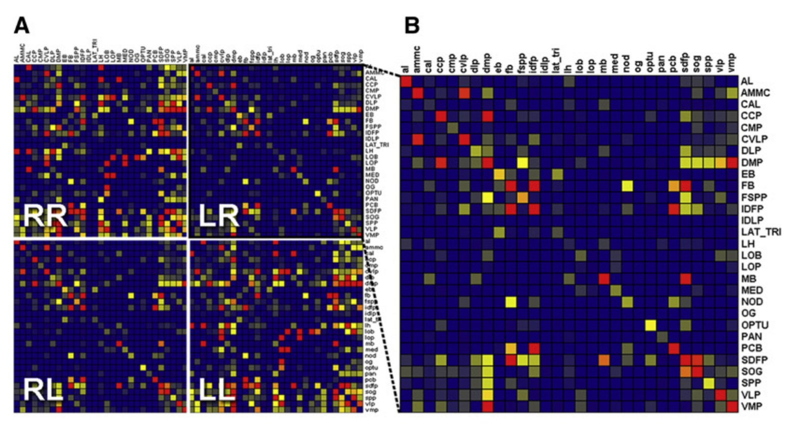
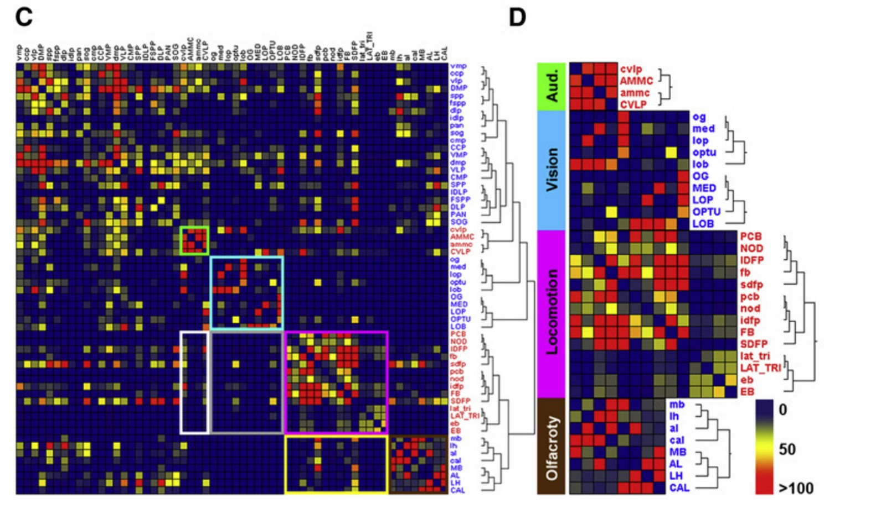

1一顆蕈狀體，是四塊還是一塊？


- 萼 MB_CA
- 柄 MB_PED
- 垂直葉 MB_VL
- 水平葉 MB_ML
- 其餘腦區（淡灰剪影）
A、B 兩圖由 scripts/make_figures.py 從標準腦分區檔算出，用同一個裁切框，比例一致。模板 FCWB（Ostrovsky & Jefferis 2014，CC0）；分區 FCWBNP（natverse，GPL-3；分區出自 Ito et al. 2014, Neuron 81:755–765）。
A 和 B 是同一顆腦、同一個結構。差別只在於你拿什麼問題去問它。
A 是解剖學家的答案。他們把腦切片、染色，看得見的界線畫下來，於是蕈狀體有了四個部分：萼、柄、垂直葉、水平葉。這是可靠的觀察，四個部分確實長得不一樣。
B 是 Chiang 等人在 2011 年提出的答案。他們問的不是「這裡看起來像幾塊」，而是「這裡有沒有一群纖維完全不出這個區域的神經元？」——結果是：萼沒有自己的，葉也沒有自己的。整顆蕈狀體才有。所以按這個判準，它是一個單位，不是四個。
正視圖裡萼（藍）和柄（紫）被前面的葉擋掉大半。換個角度看，四個部分的關係會清楚很多：

scripts/make_figures.py 從標準腦分區檔算出。模板 FCWB（CC0）；分區 FCWBNP（natverse，GPL-3；分區出自 Ito et al. 2014）。看清楚這個形狀之後，下一節的問題才有意義：如果你把這幾個部分當成幾個獨立的腦區來做分析，會發生什麼事？
2這不是名詞問題，是你的分析結果會不會變
假設你手上有一批神經元的影像，你想問一個很自然的問題：哪些腦區之間有連結？
做法很直觀——一顆神經元如果同時伸進 A 區和 B 區，就記 A 和 B 之間一筆連結。把所有神經元都這樣數過一遍，就得到一張全腦的連線表。
問題來了。這張表長什麼樣子，完全取決於你事先怎麼劃 A 區和 B 區，而劃分方式是你在數之前就決定的。而且錯法有兩種，方向相反。
| 切法 | 實例 | 連線表上會發生什麼 |
|---|---|---|
| 切太細 | 把蕈狀體切成萼／柄／葉，也就是本頁第 1 節那張圖的 A | 一顆 Kenyon cell 從萼出發、穿過柄、進入葉，於是每一顆都替「萼—柄」「柄—葉」記一筆。每一側大約兩千五百顆 Kenyon cell，就算你的資料只收到其中一小部分，這幾條線也會粗得不成比例——單元內部的接線，被記成了跨區連結 |
| 併太大 | 把腹外側前腦（VLP）當成一整塊 | 論文認為它應該分成背側與腹側（原文的語氣是「三條證據顯示背側與腹側 VLP 可能是兩個獨立的功能單元」），其中一條理由是兩塊連出去的對象不一樣。當成一整塊，這兩組不同的對外關係就併成一筆，看起來像同一個區域同時連向所有對象——真正的往來被藏進「區內」 |
兩種錯法方向相反，後果卻一樣：連線表上的東西，有一部分是你自己的切法造成的，不是腦的性質。
所以「腦區怎麼劃」不是命名習慣的問題，也不是可以之後再說的細節，它是分析的第一步。你需要一個不靠肉眼、講得出理由、別人可以重跑一次的分區方法，而且它必須在算連線之前就先做完。LPU 就是這樣一個方法。
差別不在神經元，在你事先劃的那條線落在哪裡。線落在兩個處理單元之間，跨過它就是兩個單位在交換訊息；線從一個處理單元中間切過去，同一件事就只是那個單位內部的接線。
兩種情況在資料裡長得一模一樣——「同一顆神經元伸進兩區」這個判準本身分不出它們。所以分區必須用另一套方法先做完，再拿神經元來談連結。
LPU 的判準只有兩條。下一節先把會用到的名詞交代掉，第 4 節再看那兩條是什麼。
3先認四個字
接下來會反覆出現四個專有名詞，先花兩分鐘認一下。
腦裡神經纖維密集交織、幾乎沒有細胞本體的區域。染色之後肉眼看得出界線，傳統的「腦區」指的就是它。這是形態上的分區。
論文的定義：神經突完全侷限在單一個腦區之內的神經元。注意這是形態上的判準——看纖維跑到哪裡，不是看它在做什麼。LPU 的條件一就建立在它身上。
論文的定義：樹突與軸突連接兩個或更多腦區的神經元。論文把 LN 與 PN 稱為「兩群功能上不同的神經元」，但兩者的判準都是形態的。LN 待在區內，PN 跨區。
一群走同一條路徑的神經纖維綁在一起形成的束。可以想成腦裡的幹道。論文綁束的演算法寫在補充材料〈Searching Neural Tracts〉：兩端的平均終點位置相距小於 30 個體素、且總路徑長度相似度大於 60% 的路徑，綁成同一條。常被引用的「一條神經束至少由三顆神經元組成」不是規定，那句話出自圖 7D 與圖 S7 的圖說，描述的是他們找到的那些束的性質。
還有一件會讓人卡住的事：腦區的名字換過一輪
Chiang 等人在 2011 年用的腦區名字，和今天大多數工具、資料庫用的名字不是同一套。那套舊名字也不是他們自己取的——補充圖 S2(B) 註明每半腦的 29 個分區是「as defined previously」，引的是 FlyBrain 線上圖譜（Armstrong et al., 1995, Neuron 15:17–20），也就是當年整個領域共用的那一套。2014 年由 17 位作者、外加集體署名的「昆蟲腦命名工作小組」發表了一套系統性命名法（Ito et al., Neuron 81:755–765），把整個昆蟲腦的名字重新整理過。本頁的圖用的是新名字，論文的文字用的是舊名字。
把 Chiang 論文補充材料列出的 29 個舊名字，逐一拿去對今天的那一套。下表一列一個名字，列出全部 29 個，不是舉例。左邊兩欄是論文用的舊名，右邊那欄是今天的名字：
| 這一類有幾個 | 舊名 Chiang 2011 | 舊名的全稱與中譯 | 今天的名字 Ito et al. 2014 |
|---|---|---|---|
| 名字沒變 5 個 |
AL | Antennal Lobe 觸角葉 | AL |
| AMMC | Antennal Mechanosensory and Motor Center 觸角機械感覺與運動中心 | AMMC | |
| EB | Ellipsoid Body 橢球體 | EB | |
| FB | Fanshaped Body 扇形體 | FB | |
| LH | Lateral Horn 側角 | LH | |
| 同一個結構 換了縮寫 8 個 |
Cal | Calyx 蕈狀體的萼 | MB_CA |
| Lat Tri | Lateral Triangle 側三角 | BU（bulb，Ito 論文明訂的新詞） | |
| Lob | Lobula 小葉 | LO | |
| LoP | Lobula Plate 小葉板 | LOP | |
| Med | Medulla 髓質 | ME | |
| Nod | Noduli 結節 | NO | |
| PCB | Protocerebral Bridge 前腦橋 | PB | |
| SOG | Subesophageal Ganglion 食道下神經節 | GNG／SEZ（Ito 論文明訂） | |
| 一個舊名 對到多個新名 1 個 |
MB | Mushroom Body 蕈狀體 | MB_PED（柄）＋MB_VL（垂直葉）＋MB_ML（水平葉） 萼另外對到 MB_CA，已列在上一類的 Cal |
| 對應關係未查證 1 個 |
OPTU | Optic Tubercle 視結節 | ？ 新系統裡有 AOTU（前視結節），但 Ito 論文正文沒有列出這一條對照，本頁不下定論 |
| 找不到對應 14 個 |
CCP | Caudalcentral Protocerebrum 尾中央前腦 | — 沒有對應 |
| CMP | Caudalmedial Protocerebrum 尾內側前腦 | — 沒有對應 | |
| CVLP | Caudal Ventrolateral Protocerebrum 尾腹外側前腦 | — 沒有對應 | |
| DLP | Dorsolateral Protocerebrum 背外側前腦 | — 沒有對應 | |
| DMP | Dorsomedial Protocerebrum 背內側前腦 | — 沒有對應 | |
| FSPP | Frontal Superpeduncular Protocerebrum 前柄上前腦 | — 沒有對應 | |
| IDFP | Inferior Dorsofrontal Protocerebrum 下背前側前腦 | — 沒有對應 | |
| IDLP | Inner Dorsolateral Protocerebrum 內背外側前腦 | — 沒有對應 | |
| OG | Optic Glomerulus 視小球 | — 沒有對應 | |
| PAN | Proximal Antennal Protocerebrum 近端觸角前腦 | — 沒有對應 | |
| SDFP | Superior Dorsofrontal Protocerebrum 上背前側前腦 | — 沒有對應 | |
| SPP | Superpeduncular Protocerebrum 柄上前腦 | — 沒有對應 | |
| VLP | Ventrolateral Protocerebrum 腹外側前腦 | — 沒有對應 | |
| VMP | Ventrolmedial Protocerebrum（原文如此） 腹內側前腦 | — 沒有對應 | |
| 合計 5 ＋ 8 ＋ 1 ＋ 1 ＋ 14 ＝ 29，與補充材料的縮寫表逐項對得起來 | |||
最後那 14 個的中文是照字面直譯——它們在今天的命名法裡沒有對應，也就沒有通行的中文名。
4LPU 的定義：兩個條件
LOCAL PROCESSING UNIT（在地處理單元）
一個腦區如果
（一）擁有自己的一群在地神經元（LN），這群 LN 的纖維完全侷限在該區域之內；而且
（二）該區域至少被一條神經束連上，
它就是一個 LPU。
條件一的來源是觸角葉。觸角葉的在地神經元（AL-LN）是當時研究得最清楚的一群，它們的纖維彼此纏繞、完全待在觸角葉裡。論文明說，正是 AL-LN 的研究促使他們去檢查腦中其他同樣有一群 LN 纏在一起的區域——即使那些區域的功能當時還不清楚。條件一就是把觸角葉的這個特徵拿來當成一般判準。
條件二則是一句規定：「每個 LPU 至少被一條神經束連上」。它被放在判定流程的最後一步，用途是驗證——先由在地神經元圈出候選區域，再檢查這個區域有沒有自己的長程神經束。
還有一件事值得注意：這是一個操作型定義，它規定的是「怎麼判定」，不是證明了「這一區在生理上真的是一個運算單元」。論文自己用的字是 putative（推定的）——圖 5 的圖說 (B)(C) 寫的是「推定的 LPU」與「缺乏 LN 的推定 hub」。
四個反直覺的案例
定義本身不難記，難的是它會給出跟直覺不一樣的答案。這四個案例最能說明它到底在做什麼：
「四對」是論文正文的說法；摘要寫「六個 hub」，圖 5A 上標「−」的有九個——三個數字的來龍去脈見下面〈坑二〉 它們通過不了條件一。論文另外給了一個名字叫 hub：有長程神經束、但沒有自己的 LN 族群。四個的情況並不相同：視結節上滿是連接左右腦的橫向纖維，是半腦之間的橋；結節與視小球「可能小到容不下額外的 LN」，論文說這樣的安排暗示輸入與輸出之間沒有進一步的「編輯」；而 IDLP 形狀不規則、任何神經元對它的支配率都低於 30%，論文推測它可能只是一條跨區通道。
5LPU、neuropil、hub 差在哪
| 有自己的 LN 族群 | 有神經束連上 | 邊界怎麼來的 | |
|---|---|---|---|
| neuropil 神經髓質區 | 不一定 | 不一定 | 染色後的形態界線，肉眼判定 |
| LPU 在地處理單元 | 有 | 有 | 由在地神經元的分布算出來 |
| hub 轉接區 | 沒有 | 有 | 沿用 neuropil 的邊界 |
但判定不是「一個 neuropil 進去、一個答案出來」。論文在導入 LPU 時立了一個前提：LPU 的範圍等於或小於一個解剖學 neuropil 的邊界，流程也只做「在 neuropil 內部找有沒有需要再細分」。實際跑下來卻出現四種情況：
補充材料〈Defining an LPU〉一節的第一句：
“Assuming an LPU is equal to or smaller than the boundary of an anatomically demarcated neuropil region, we detect whether a neuropil contains more than one population of LNs…”
正文導入 LPU 的那句用的是同樣的說法，只是主語寫成「一個資訊處理單元」而不是 LPU：“Assuming an information processing unit is equal or smaller than the boundary of an anatomically demarcated neuropil region such as the AL…”
| 情況 | 例子 |
|---|---|
| 一個 neuropil ＝ 一個 LPU | 多數情況 |
| 一個 neuropil 拆成兩個 LPU | VLP（全篇唯一） |
| 多個 neuropil 併成一個 LPU | 蕈狀體：論文把它分成萼與葉兩個 neuropil，兩者都沒有自己的 LN 族群，於是整顆算一個 LPU。中央複合體也有一例（見上一節第三個案例） |
| 沒有自己的 LN 族群，但有神經束 | 歸為 hub |
合併這件事在圖 5A 那張正負號表上看得很清楚。表中同時出現這幾列：
| 圖 5A 裡的列 | 有無 LN 族群 | 意思 |
|---|---|---|
| Cal | − | 萼單獨看，沒有自己的 LN 族群 |
| MB | − | 葉單獨看，也沒有 |
| Cal＋MB | ＋ | 兩者合起來才有——這一列就是合併本身 |
| Lat Tri | − | 側三角單獨看，沒有 |
| EB | − | 橢球體單獨看，也沒有 |
| Lat Tri＋EB | ＋ | 合起來才有 |
6全腦盤點：這一篇的 41 是怎麼算出來的
把兩個條件套過全腦之後，這堂課讀的這一篇（Chiang et al., 2011）得到 41 個 LPU。這個數字是這樣湊出來的：
（EB 這一個有問題，見下方坑三）
Chiang et al. 2011 的數字
這 41 個在 圖 5A 上數得出來：那張正負號表標「＋」的正好 22 列（19 對成對的 ＋ 3 個中央不成對的 ＝ 22），標「−」的 9 列。（本頁直接判讀原圖數過。）
不過本課往後一律用 41。這堂課讀的是 2011 那一篇，它自己報的數字就是 41；本頁後面幾節，以及 PART 2 到 PART 5 只要寫「論文的 41 個 LPU」，指的都是這個數字。需要用到 43 的時候，一定會寫明那是 2015 那一篇的。
另外約 26% 的已建圖神經元屬於 LPU 的在地神經元。另有幾個缺乏分離 LN 族群、但有長程神經束的區域，被歸為 hub。論文說，LPU 加 hub 合起來填滿了大部分的腦（圖 5D）。
論文建連線矩陣時用的是 58 個 neuropil，判定出來的是 41 個 LPU；而前一節那兩個「多個 neuropil 併成一個 LPU」的例子已經說明，兩者不可能一對一。論文只說「多數 LPU 與看得見的 neuropil 重合」，沒有提供一份把 58 個 neuropil 逐一歸到 LPU 或 hub 的對照表——所以你沒辦法從一套換算到另一套。想重現這套分區時，這件事會直接卡住。
論文那張全腦 LPU 與 hub 的圖
本節與下一節反覆提到的「圖 5A 的正負號表」就是這一張的左半邊。整張圖在這裡：

但這張圖不是分區圖。論文摘要說 FlyCircuit 提供全腦 LPU 的三維視覺化，那是網站上的呈現；本機的 FlyCircuit 資料裡沒有 LPU 的分區檔，也沒有找到可下載的版本。要有一份自己的 LPU 劃分，就得把論文的流程重跑一次——後面四個 PART 就是在做這件事：PART 4 最後那張全腦判定圖是我們自己算出來的結果（75 區裡 8 區判成單一 LPU、13 區多個候選、48 區 hub、6 區兩者皆非）。它與論文的 41 個 LPU 對不起來，第一個原因是兩邊用的分區就不是同一套：我們用的是 Ito et al. 2014 的 75 區（下面那張全腦分區圖），論文用的是當年通行的 58 區（每半腦 29 個，出自 第 3 節說的那套舊命名——FlyBrain 圖譜，Armstrong et al., 1995）；而第 3 節那張對照表已經說明，29 個舊名字裡有 14 個在新系統裡找不到對應，邊界是重畫過的。（PART 4 列出了全部三個原因。）
再拿今天通行的解剖學分區對照著看。它不是 LPU：

scripts/make_figures.py 從標準腦分區檔算出。模板 FCWB（CC0）；分區 FCWBNP（natverse，GPL-3；分區出自 Ito et al. 2014）。上面那張全腦分區圖的分區有 41 個基本名字（34 個成對 ＋ 7 個中線 ＝ 75 個標籤），出自 Ito et al. 2014。
Chiang 等人數出來的是 41 個 LPU（19 對 ×2 ＋ 3 個中央不成對），出自 2011 年、用的是舊命名。
兩個數字一樣純屬碰巧，兩套分區的邊界、名字、劃分依據沒有一項相同。看到「41」不要以為講的是同一件事。
還有三個數字上的坑
坑一：這一篇寫 41，後續那一篇寫 43——差的就是 VLP 那一拆。兩個數字不是算法不同，是兩篇論文：本頁講的是 Chiang et al. 2011 的 41；43 出自 2015 年由部分同一批作者發表的資訊流分析論文，該文寫「我們先前提出了一個不同於傳統解剖學的判準來把腦分成數個功能單元，包括 43 個在地處理單元（LPU）與六個中介單元」，引用的正是 Chiang 2011。
差在哪裡，把兩份名單逐條對就看得出來——2015 那篇的補充圖 S1 列出了全部 43 個 LPU 的全名：
| Chiang et al. 2011 | Shih et al. 2015 | |
|---|---|---|
| 左右成對的名字 | 19 個——VLP 只算一條 | 20 個——VLP 那一條變成 VLP-D（背側）與 VLP-V（腹側）兩條 |
| 中央不成對的 | 3 個：PCB、FB、EB | 3 個：PB、FB、EB（PCB 就是 PB，換了縮寫） |
| 合計 | 19 × 2 ＋ 3 ＝ 41 | 20 × 2 ＋ 3 ＝ 43 |
兩份成對名單逐字比對：2015 多了 VLP-D、VLP-V，少了 VLP，其餘 18 條完全相同。（本頁自行比對兩篇的名單。） | ||
所以這個差額的來源很具體：2011 自己認定 VLP 應該分成背側與腹側兩個 LPU（全篇唯一的一次），卻沒有把這一拆算進它自己報的 41 裡；2015 那篇算進去了，於是 41 變成 43。兩篇都沒有說明這件事——2015 只寫「我們先前提出了……包括 43 個」，沒有提到自己改過數字。引用時要標清楚你用的是哪一篇。
坑二：hub 有幾個，論文自己給了三個答案。摘要寫「六個 hub」；正文寫「只有四對 neuropil 缺乏分離的 LN 族群：OPTU、Nod、OG、IDLP」；而圖 5A 那張正負號表上，標記為「−」的共有九個——Cal、EB、FSPP、IDLP、Lat Tri、MB、Nod、OG、OPTU（本頁直接判讀原圖數過）。三處三個數。（坑一那篇 2015 年的論文採用的是摘要的「六個」，而且它的補充清單寫明那六個是 NOD、OG、OPTU 三個名字各左右一份——正文提到的第四對 IDLP 沒有列進去。本頁據此判讀：摘要的「六個」指的是三對。）所以本課的寫法是：「41 個 LPU，加上數個缺乏在地神經元的 hub」——正文一律不自己給 hub 的數字。需要引用摘要那個「六個」時會標明是摘要的說法（首頁那一格就是這樣標的）。
坑三：橢球體（EB）在正文與圖 5A 裡的身分不一樣。正文把 EB 列為三個中央不成對 LPU 之一（另兩個是 PCB、FB），但圖 5A 給 EB 的標記是「−」，也就是「沒有自己的 LN 族群」；表上得到「＋」的是合併後的 Lat Tri＋EB。換句話說，同一篇論文的正文與圖，對 EB 到底算不算一個獨立的 LPU 給了不同的答案。論文沒有說明這個差異。
7LPU 到底被用在哪裡
回到第 2 節那個問題：腦區怎麼劃，決定了連線表長什麼樣。有了兩個條件、有了 41 個 LPU，腦的分區第一次有了一條講得出步驟、而且別人可以重跑的判準，不再只是「某個解剖學家這樣切」。
但要老實說一件事，免得把功勞算錯：這篇論文的後續分析，有一半其實沒有用到 LPU。
先看那張連線矩陣：節點不是 LPU
Chiang 這篇自己建的連線矩陣，節點是 58 個 neuropil，不是 41 個 LPU。論文三處都這樣寫——補充材料寫「每一顆神經元對 58 個 neuropil 各給 0 或 1……可轉換成一個 58 × 58 的對稱矩陣」；正文寫矩陣是「neuropil 之間的連線輪廓」；圖 6E 的圖說寫「58 個 neuropil 之間的連線圖」。
論文自己給的理由是一句話：“Because most LPUs coincide with neuropils that are visible in the counterstained brain samples…”——因為多數 LPU 與看得見的 neuropil 重合。用的是 most，不是 all。

注意軸上的名字：AL、CAL、CCP、CVLP、DMP、LAT_TRI、MED、PCB、SOG……這些是 2011 年的舊名字（上面第 3 節那張對照表裡的同一批），而且這裡是 29 個基本名 × 左右 ＝ 58，不是 41 個 LPU。矩陣的節點是 neuropil。
連 EB、FB、PCB 也各佔左右兩格——矩陣把中線結構也切成左右兩半，所以是 29×2；而第 6 節數 LPU 時，這三個是「中央不成對」各算一個。同一批結構，兩種數法，看到 58 與 41 對不起來時，有一部分原因就在這裡。
出自 Chiang, A.-S. et al. (2011) Current Biology 21(1), 1–11，Figure 6 的 A、B 兩格，doi:10.1016/j.cub.2010.11.056。原圖重製，教學用途。沒有用到 LPU 的部分：四個功能模組
四個功能模組——聽覺、視覺、運動、嗅覺——是把上面那張 58 × 58 連線矩陣拿去做階層分群跑出來的。每個模組的特徵是：組內連線多、彼此位置相鄰、跨模組的連線稀疏。

看 D 裡面每一列的名字，就看得出這一步的節點是什麼。大寫是右腦、小寫是左腦——例如聽覺那一組是 cvlp、AMMC、ammc、CVLP，視覺那一組是 og、med、lop、optu、lob 加上它們的大寫。左右同名的腦區多半落在同一個模組裡，而列出來的是 neuropil 的名字，不是 LPU。
這一步不需要 LPU 的定義。分群的輸入是 neuropil 之間的連線，就算完全沒有 LPU 這個概念，同一份分群照樣做得出來。論文把結果寫成「四群密集互連的 LPU」，但那只是描述用語，分群的節點是 neuropil。
有用到 LPU 的部分：神經束
神經束那一步不一樣。論文原文：
“To map the major tracts connecting different brain regions, we clustered neurons based on whether they follow a similar trajectory path linking specific LPUs. We found 58 interregional fiber bundles running along stereotyped pathways.”為了描繪連接不同腦區的主要神經束，我們依據神經元是否沿著相似的軌跡路徑連接特定的 LPU 來分群，找到 58 條沿著固定路徑走的跨區纖維束。
LPU 是這一步的分群依據，換掉它結果就會變。而且三類神經束的定義也都以 LPU 為單位：
- 交連束（14 條）：連接一個 LPU 或 hub 與其對側的對應結構
- 交叉束（10 對）：斜向連接對側的兩個不同 LPU
- 聯絡束（12 對）：連接同側的兩個 LPU
另外，LPU 本身就是這篇的產出之一——摘要說這張中尺度圖譜「由 41 個 LPU、六個 hub、58 條 tract 組成」。它是結果，不只是工具。
真正的份量在後面
所以「LPU 重要」的具體意思是這個：它把「一個腦區算不算一個處理單元」，從一個看圖說話的判斷，變成一個寫得出步驟、可以重跑、也可以被推翻的問題。後續這條研究線上的論文，節點就是從這裡接手的——雖然接手時數字已經變成 43（見上一節的坑一）。
8這個定義的限制
這一節不是挑毛病，是使用這套分區時該知道的邊界。先分成兩組——有些是 LPU 這個定義本身的問題，有些不是它造成的，但會限制它能說什麼。分清楚才不會把帳算錯。
A. LPU 這個定義本身的限制
A1、劃分規則本身不完全一致。論文導入 LPU 時的前提寫的是「等於或小於」一個 neuropil 的邊界（補充材料〈Defining an LPU〉第一句），流程也只做「在 neuropil 內部再細分」；但蕈狀體與中央複合體那兩例，實際上是把好幾個 neuropil 合起來當一個 LPU。論文沒有討論這個落差，也沒有修改那句前提。要重跑這套流程的人會先卡在這裡——因為合併這一步不在那七個步驟裡。
A2、41 不是一個穩定的數字。論文自己寫：「仍有可能某些 LPU 還可以再細分成更小的 LPU，就像背側與腹側 VLP 那樣。」（It is still possible that some LPUs may be subdivided into smaller LPUs, as in the case of dorsal and ventral VLPs.）這是一個當下的暫定值——而後續那一篇正是這樣做的：2015 年那份清單把 VLP 拆成 VLP-D 與 VLP-V，41 因此變成 43（見〈坑一〉）。
A3、判準依賴取樣（※ 這一條是推論，論文未直接討論）。一個區域要被判定成 LPU，前提是它的在地神經元有被標記到、被取像、被放進資料庫。FlyCircuit 當時收錄的是約一萬六千顆神經元；論文說成年果蠅腦「只有大約十萬顆神經元」，而這批資料涵蓋「> 10% of the total number of individual neurons」——超過總數的十分之一。
A4、「有多少在地居民才算數」沒有下限。論文自己把這個問題寫了出來——OG 與 Nod 可能小到容不下額外的 LN，而「這些問題關係到：形成一個基本的網路模組，是否需要最少數量的 LN」。它提了問題，沒有回答。
B. 不是 LPU 造成的，但會限制它能說什麼
B1、看得到纖維，看不到突觸。這是光學顯微鏡解析度的限制，整張圖譜都受它影響，不是 LPU 專有的問題。但論文自己正是用 LPU 來講這件事：
“Without additional details about synaptic connections, it is premature to think we can understand information processing within an LPU.”在缺少突觸連結的進一步細節之前，認為我們能理解一個 LPU 內部的資訊處理，還太早。
上面第 7 節那張連線矩陣說的是「哪一區的神經元把纖維伸進了哪一區」，不是「哪一顆神經元接到哪一顆神經元」。兩顆神經元的纖維在同一個區域裡出現，不代表它們之間有突觸。
B2、邊界是對位出來的，誤差從上游繼承。所有神經元都得先對齊到同一顆標準腦才能疊加，而對位本身有誤差——這是註冊管線的性質，跟 LPU 的判準無關，但 LPU 的邊界是在對位後的資料上算出來的，所以誤差會傳下來。論文量過：每個樣本的地標與標準腦對應中心點之間的平均距離，全腦整體對位後是 3.9 ± 0.4 µm，針對局部再對一次可降到 1.1 ± 0.2 µm（n = 10）。局部對位有代價，論文的說法是「以其他區域的位置可靠性為代價」。